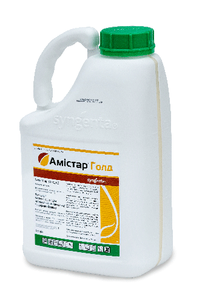
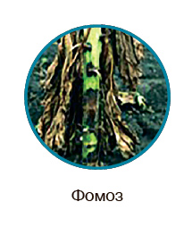
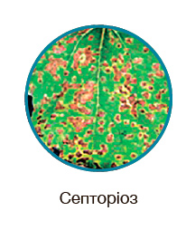
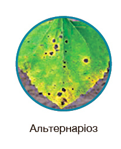
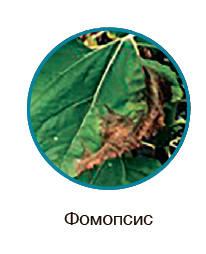
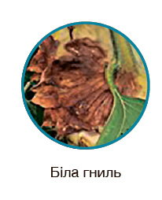

перевірена технологія для вдосконалення вашого поля
паспорт препарату
Амістар® Голд 250 SC, КС
125 г/л азоксистробіну, 125 г/л дифеноконазолу
Стробілурини, триазоли
Концентрат суспензії
Класифікація ВООЗ: II
5 л
Фото упаковки

головні переваги препарату
- Надійний захист соняшнику, сої та цукрових буряків проти широкого спектра хвороб
- Тривалий захисний період
- Неперевершений профілактичний і лікувальний ефект завдяки трансламінарній і системній дії
Застосування препарату
СОНЯШНИК*
Спектр дії
Фаза внесення
Норма витрати, л/га
Кратність обробок / Термін очікування
* У тому числі й авіаметодом
ЦУКРОВИЙ БУРЯК
Спектр дії
Фаза внесення
Норма витрати, л/га
Кратність обробок / Термін очікування
СОЯ
Спектр дії
Фаза внесення
Норма витрати, л/га
Кратність обробок / Термін очікування
РІПАК ОЗИМИЙ
Спектр дії
Фаза внесення
Норма витрати, л/га
Кратність обробок / Термін очікування
Примітка: при авіаобробці регламенти застосування залишаються ті самі, що й для наземного внесення.
Сумісність
Амістар® Голд можна змішувати з іншими загальновживаними пестицидами на відповідній культурі. Проте в кожному конкретному випадку слід перевіряти препарати на сумісність.
Особливості застосування
Амістар® Голд — фунгіцид із системною дією для застосування на соняшнику, сої, ріпаку та цукровому буряку має захисну і лікувальну дію. Обприскування найкраще проводити профілактично або при появі перших ознак хвороби. Не рекомендується проводити обробки по вологій листовій поверхні або якщо очікуються опади протягом 2,5–3 годин після обробки. Робочий розчин треба використати протягом 24 годин після приготування. Терміни виходу працівників на оброблені території: для проведення механізованих робіт — 3 доби, для ручних робіт — 7 діб.
Температура застосування
Використовувати при температурі не вище за +25 °С.
Рекомендована норма витрати робочого розчину
200-300 л при наземній обробці, 50-100 л при авіаобробці
СПЕКТР ДІЇ
Амістар Голд контролює всі основні грибкові хвороби соняшнику
СПЕКТР ДІЇ






СИНЕРГІЗМ ДІЮЧИХ РЕЧОВИН
ФОМОЗ
Дифеноконазол
Азоксистробін
Амістар Голд
СЕПТОРІОЗ
Дифеноконазол
Азоксистробін
Амістар Голд
АЛЬТЕРНАРІОЗ
Дифеноконазол
Азоксистробін
Амістар Голд
ФОМОПСИС
Дифеноконазол
Азоксистробін
Амістар Голд
БІЛА ГНИЛЬ (СТЕБЛОВА ФОРМА)
Дифеноконазол
Азоксистробін
Амістар Голд
БІЛА ГНИЛЬ (КОШИКОВА ФОРМА)
Дифеноконазол
Азоксистробін
Амістар Голд
НЕСПРАВЖНЯ БОРОШНИСТА РОСА
Дифеноконазол
Азоксистробін
Амістар Голд
ІРЖА
Дифеноконазол
Азоксистробін
Амістар Голд